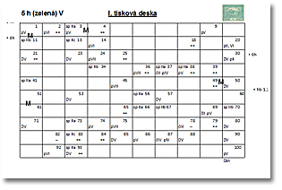
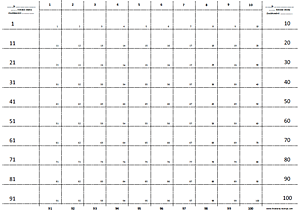

Téléchargements
Feuilles d’album et outils réalisés de ma main, librement téléchargeables.
- Hradčany – série de base, non dentelés et dentelés
(y compris les combinaisons de spirales, de barres et de cadres du cinquième dessin ; complété par l’émission provisoire de timbres-taxe et l’émission aérienne de 1920)
Dernière mise à jour 22. 9. 2016 - Hradčany – tous les défauts de planche catalogués
Dernière mise à jour 1. 1. 2015 - Tchécoslovaquie 1918–1939
Dernière mise à jour 26. 11. 2014
Schémas des planches d’impression
Le philatéliste Radek Novák a établi des schémas clairs des planches d’impression d’après la Monographie n° 1. Le fichier Excel est librement téléchargeable. Dernière mise à jour 28. 4. 2015

Grille pour la reconstitution d’une planche
Pour les collectionneurs spécialisés dans la reconstitution des planches d’impression, j’ai créé une grille au format A3 dans laquelle les timbres se placent au moyen d’une charnière. Je l’imprime moi-même sur un papier plus épais, qui ne se plie pas. Dernière mise à jour 17. 11. 2015

Toute suggestion et toute remarque constructives sont les bienvenues. Si les feuilles d’album vous plaisent, recommandez-les à vos amis.